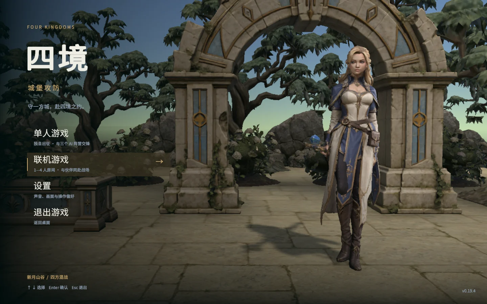
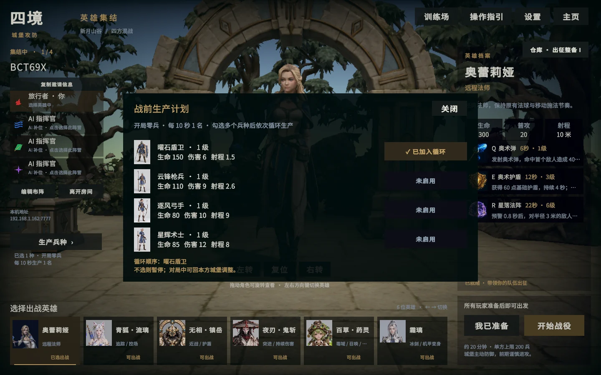
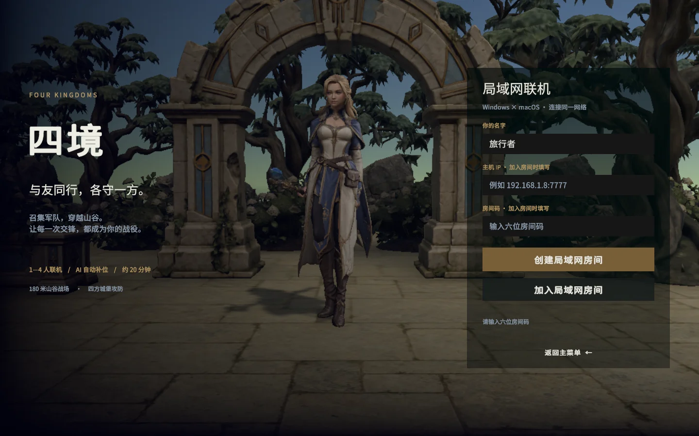

选择自己的战斗方式
六位英雄，施法、近战与机甲变身。击败敌人获取经验，逐步解锁技能。
开发中试玩版 V0.19.4
FOUR KINGDOMS
守一方城，
赴四境之约。
选择你的英雄，率军穿越新月山谷。
四方城堡，四支军队，最后一方赢得战役。
WINDOWS x64 ＋ macOS ／ 中文界面

THE BATTLEFIELD
亲自作战，也指挥全局。
从战前部署到城堡攻防，每一步都由你决定。
六位英雄，施法、近战与机甲变身。击败敌人获取经验，逐步解锁技能。
盾卫、枪兵、弓手与术士轮流生产。使用布阵、号角与穿云箭组织进攻和防守。
靠近城堡调整生产与升级。城堡会自动反击敌军；城破则阵营淘汰。

PLAY THE TRIAL
试玩版 0.19.4 · 2026.09.28
免费测试版本，内容仍在持续完善。
WINDOWS
Windows 10 / 11 · 64 位 x64
完整解压 ZIP 后运行 FourKingdoms.exe。
MACOS
macOS 12 或更新版本 · Apple 芯片 / Intel
打开 DMG，将游戏拖入 Applications。
本次更新 每 10 秒生产 1 名小兵；新增局域网创建房间、主机 IP 加入、邀请信息复制与房主退出清理。
版本说明与校验文件 ↗下载文件由 GitHub Releases 提供。
测试说明：Mac 本机多人进程验证与 Windows 构建检查分别记录。实体 Windows 与 Mac 的跨设备联机、不同显卡表现仍需要试玩反馈。建议两台电脑都使用此处的同一版本。
BETTER TOGETHER
任选一台电脑担任房主。
局域网试玩无需注册账号或租用服务器。
两台电脑连接同一路由器的 Wi-Fi 或网线，安装同版本游戏。避免使用开启隔离的访客 Wi-Fi。
进入「联机游戏」，点击「创建局域网房间」。大厅会显示本机地址和房间码，可直接复制邀请信息。
填写主机 IP（包含显示的端口）和六位房间码，加入后选择英雄并准备。房主点击「开始战役」。

先核对主机 IP、端口、房间码和两端版本。Windows 防火墙提示时允许游戏在「专用网络」通信；Mac 提示时允许游戏接收入站连接。无需关闭防火墙。使用大厅里显示的局域网地址，别把 127.0.0.1 发给另一台电脑。VPN 和访客 Wi-Fi 的隔离也可能阻止连接。
可以从主菜单进入单人模式，也可以单人创建房间，由 AI 补齐其他阵营。本页版本的联机入口用于同一局域网，暂不提供公网匹配或 NAT 穿透。
Windows：先完整解压，保留可执行文件旁的 Data 文件夹和 DLL。此试玩版没有 Windows 发布者签名，系统可能显示信誉提示，请核对本页下载来源与校验值。Mac：将 DMG 内的游戏拖到 Applications 后再运行。不要直接在压缩包或磁盘映像中长期运行。
单人仓库与设置保存在本机。局域网房间的仓库由房主电脑保存，与单人仓库分开；更换房主电脑可能显示不同的仓库。试玩期间数据格式可能调整，请勿把测试进度视为正式版本的存档承诺。
BUILDING FOUR KINGDOMS
遇到问题时，请附上系统、版本、房主所在设备与复现步骤。
反馈试玩体验